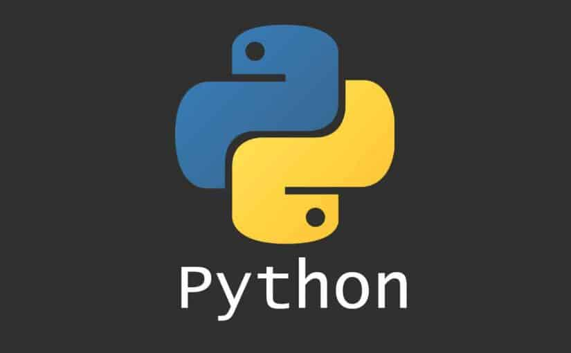

Python is named after the comedy television show Monty Python’s Flying Circus. It is not named after the Python snake.Learning python is easy as this is a expressive and high level programming language, which means it is easy to understand the language and thus easy to learn.Python is an interpreted, high-level, general-purpose programming language.

You can take advantage of Python's data analysis features to build custom Big Data solutions without putting extra time and effort into this. At the same time, Python's data visualization libraries and APIs allow you to more appealingly and effectively display and present data.
Python as an open source programming language helps to greatly reduce the expense of software development. Also several open source Python frameworks, libraries and development tools can be used to reduce development time without increasing development cost.
You can also choose from a wide variety of open source Python frameworks and programming tools according to your particular needs. For example, using robust Python web frameworks such as Django, Flask, Pyramid, Bottle and Cherrypy can simplify and speed up web application development.
Python is currently running a great many operating systems. Python interpreters can also be used to run the code on different platforms and devices. Python is also an interpreted language for the programming. It helps you to run the same code without recompiling, on multiple platforms.